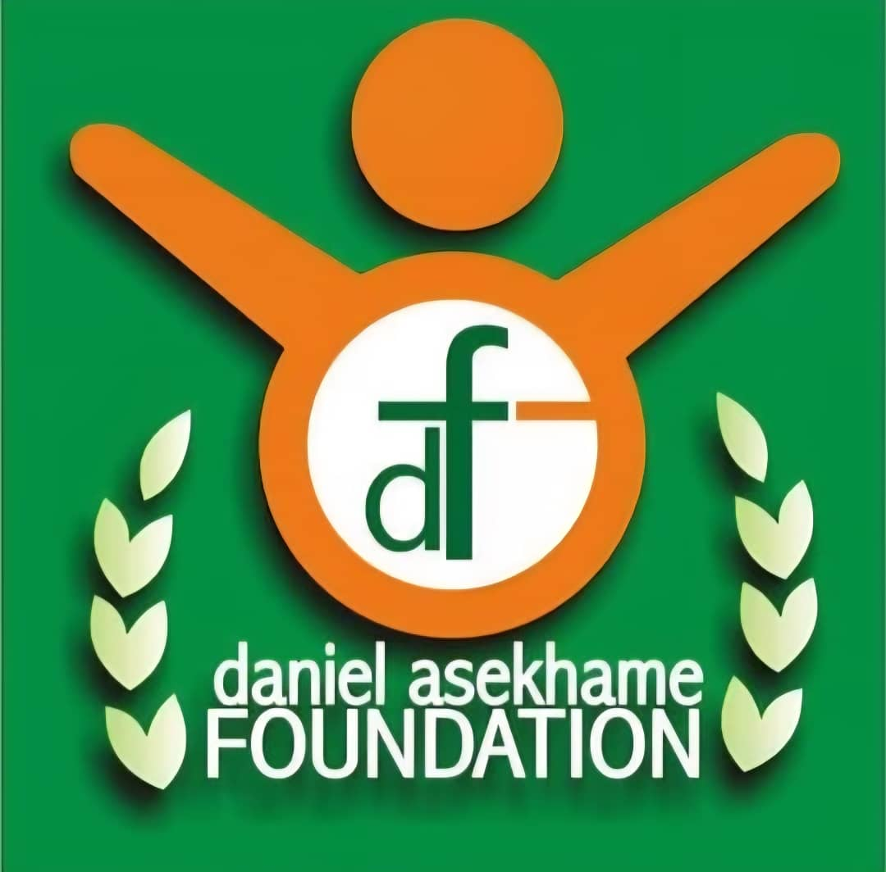

Community Development
Supporting community engagement, local development initiatives, empowerment and activities that contribute to stronger and more resilient communities.
The Daniel Asekhame Foundation's work is focused on community-centred service and interventions across areas identified in the Foundation's supplied material.
Supporting community engagement, local development initiatives, empowerment and activities that contribute to stronger and more resilient communities.
Supporting educational opportunities, learning activities, school-related assistance and youth development.
Supporting health-related activities, medical assistance, community health awareness and access to essential services.
Supporting individuals and communities affected by difficult circumstances, emergencies and humanitarian needs.
Supporting community activities connected with agriculture, productivity, environmental responsibility and sustainable development.
Supporting youth participation, leadership, skills development and initiatives that promote opportunities for women and young people.
Promoting awareness, prevention, advocacy and community engagement concerning human trafficking and protection from exploitation.
Supporting interest in research, knowledge development and evidence-informed approaches to community and social development.
The Foundation's supplied photographic and documentary material records activities involving education, healthcare, humanitarian assistance, agriculture, environmental awareness, community engagement and youth-related support.
A photographic record supplied by the Daniel Asekhame Foundation documenting community engagement, educational support, humanitarian activities, healthcare-related activities, agriculture, environmental initiatives and other Foundation activities.
The photographs are presented as part of the Foundation's supplied documentary record. The Gallery itself does not constitute independent verification of the activities depicted.
.jpg)
.jpg)


.jpg)


.jpg)

.jpg)
.jpg)

.jpg)
.jpg)


.jpg)

.jpg)


.jpg)

.jpg)


.jpg)


.jpg)


.jpg)


Join opportunities to support community-focused activities and meaningful service.
We welcome appropriate partnerships with organisations and individuals interested in supporting community development and humanitarian service.
Partner With UsTo discuss ways of supporting the Foundation's work, please contact the Foundation through WhatsApp.
Contact UsThe Foundation's supplied material includes a youth leadership development roadmap focused on service, character, leadership, community engagement and personal development.
This section presents the supplied roadmap as Foundation material and does not constitute an independent assessment or validation by ACE™.
Foundation of Service — Learning, Character Building and Volunteerism.
Emerging Leadership — Leading Through Action.
National Youth Leadership — Creating Lasting Community Impact.
Global Youth Leadership — Serving Communities Beyond Borders.